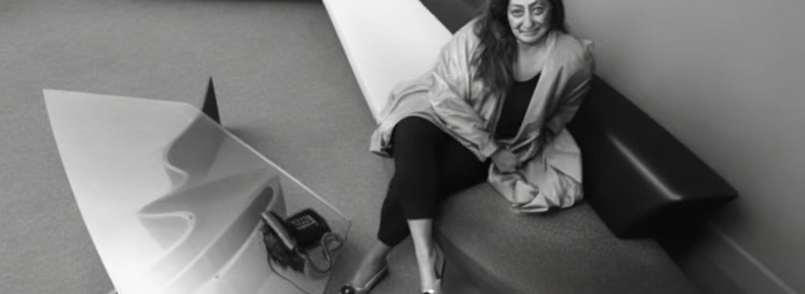

Zaha Hadid
 Zaha Hadid, nata nel 1950, è stata una visionaria architetto irachena-britannica, figura avanguardista nel panorama architettonico internazionale.
La sua prospettiva unica ha sfidato convenzioni, amalgamando forme audaci con una maestria tecnica straordinaria.
Hadid è stata la prima donna a vincere il prestigioso Premio Pritzker per l'Architettura nel 2004, un riconoscimento ben meritato per la sua rivoluzionaria concezione dello spazio.
I suoi progetti, spesso ispirati alla geometria dinamica e alle linee fluide, testimoniano un'estetica avvolgente e futuristica.
Hadid ha contribuito alla trasformazione delle nostre concezioni tradizionali dello spazio architettonico, concependo strutture che sfidano la staticità e abbracciano l'energia dinamica.
Il suo lavoro include la London Aquatics Centre per le Olimpiadi 2012 e la MAXXI - Museo nazionale delle arti del XXI secolo a Roma.
La sua eredità persiste dopo la sua morte nel 2016, con il suo studio, Zaha Hadid Architects, che continua a plasmare l'architettura contemporanea.
Hadid è stata un faro di innovazione, lasciando un'impronta indelebile nell'immaginario architettonico globale.
La sua visione audace e il suo impatto duraturo la rendono una pioniera senza eguali.